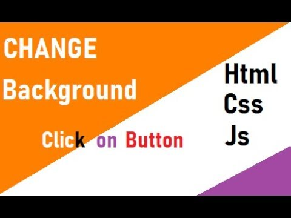

Html CSS Javascript Project
Hypertext Markup Language, or HTML, is used to describe the structure of information on a web page. Together, HTML, CSS and JavaScript make up the essential building block of websites, with CSS controlling a page’s appearance, and JavaScript programming its functionality. You can think of HTML as providing the bones of a web page, while CSS provides the skin, and JavaScript provides the brains.The script tag is used to define a client-side script. The script element either contains scripting statements, or it points to an external script file. Common uses for JavaScript are image manipulation,form validation, and dynamic changes of content. To use JavaScript from an external file source, you need to write all your JavaScript source code in a simple text file with the extension ".js" and then include that file.